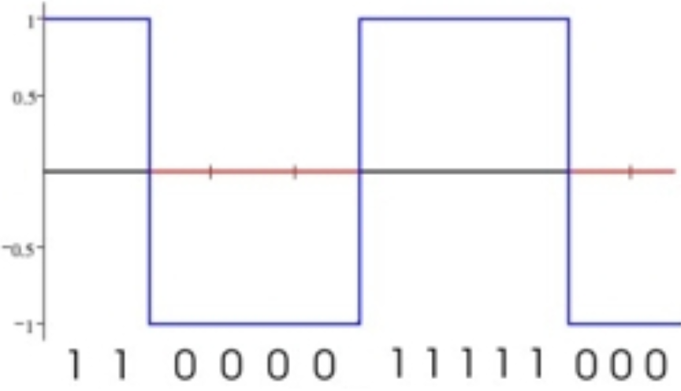
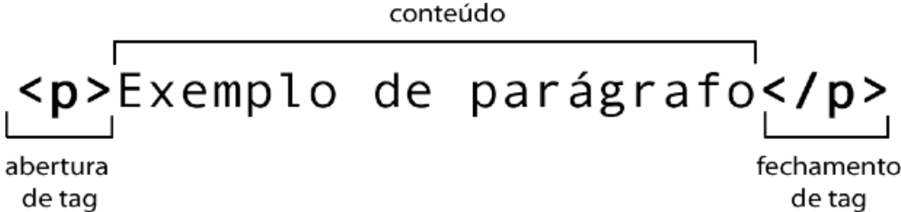
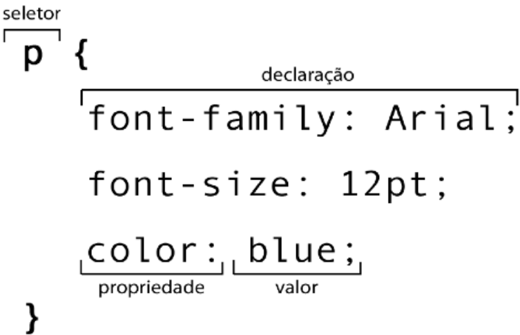

Foca do visual das coisas no estilo para o cliente , visando em oensar como fazer para o clienter entender e conseguir usar


Foca nas coisas funcionais como banco de dados, segurança, login, entre outros. São coisas que o cliente não vê


O Computador consegue ler apenas dois sinais logo se criaram o BIT e o BYTE. Só porque o computados entende 0 e 1 que ele entede numeros mas na verdade ele entende sinais alto para o 1 e sinais baixo para o 0
 mudar a imagem depoisOs sinais são passado por cabos entre continentes caso queira ver mais veja o video explicativo. Para a o computador precisar entender o sinal que vem do cabo precisa-se que o sinal chegado receba uma modelação e quem faz isso para nós é o moldem da sua casa
Não é uma linguagem de progamação. Seu foco é no conteudo apresentado
Também não é linguagem de progamação, é focado mais no visual/estilo
Esse sim é uma linguagem de progamação, no assunto ele ajuda na dinamica do site
Foca do visual das coisas no estilo para o cliente , visando em oensar como fazer para o clienter entender e conseguir usar
Foca nas coisas funcionais como banco de dados, segurança, login, entre outros. São coisas que o cliente não vê
Voce usa tags para fazer o html sendo preciso de abrir e fechar <p> e </p>
usado para o css é a bartura do css
já vimos algumas coisas sobre html e uma delas foi o <p> </p> para abrir um parágrafo e não importa o quanto vc escreva nele ele não vai pular linha para isso você precisar usar o comando <br> para qurbrar a linha como você vai ver agora
que está
cheio de
quebra
de linha.
Porem caso vc queira deixar tudo como está digitado no vscode usa o <pre>
olha como está
não estou usando o br apenas
escrevo como quero
basta colocar onde quero que no site vai aparecer igual fica na tela do vscode. OBS= usar muito br para fazer linha branca é coisa de noob
pois para colocar o < deve escrever < para aparecer, por isso deve consultar a tabela de html entities para colocar os comandos
para colocar um emoji basta ir num site como o emojipédia 🙂 para copiar e colar o emoji caso não funciona basta colocar o códico &#xnumero do emoji para colocar